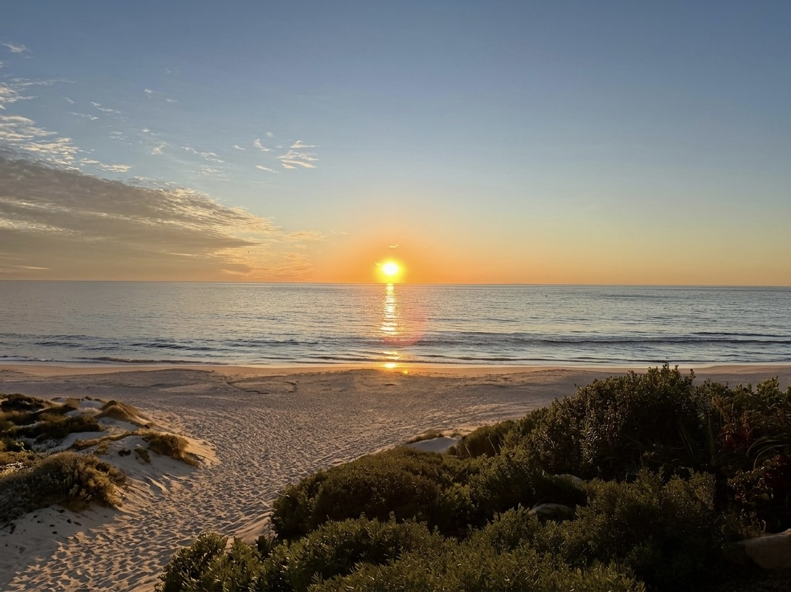

Thoughts are like hills in your landscape.#
July 19, 2026
Quieting your mind and focusing on your breath can lead to them fading away and revealing the sea behind them.

Be now. Remember the past, choose your future, be in the present. Now is the only time you have, and it is timeless.
— Dharma Jay
About the Author
An observer, facilitator and participant.
The perception of life — it is what you want it to be, you just have to experience it. What follows are reflections gathered across the years: writing on presence, choice, and the simplicity beneath what we think we see.
Writings
Essays and notes, newest first — years of thinking out loud about mind, choice, and the present.
July 19, 2026
Quieting your mind and focusing on your breath can lead to them fading away and revealing the sea behind them.

November 19, 2018
… to unlocking true potential.
Imagine… if there are more dimensions to existence beyond what we can paint with our minds. If you could paint with more colors than what the 5-color sensory palette can offer. If you are in control of your choices, and what life unfolds before you is based on those choices. If we live in a reality where nothing is real, and everything is real. If the universe is infinite, there are no limits except for those that we choose to believe in. If we limit ourselves based on what questions we ask, what we look for, and by what answers we seek. If you can live a lifetime in every moment. If we are in heaven, nirvana, paradise. Imagine… if this is all true.
September 2, 2017
Don’t like how you are feeling? Here’s a thought. Choosing what you think changes how you think. Choosing how you think changes how you feel. Choosing how you feel impacts your health and impacts your ability to choose what you think.
The first step down the path of realizing positive change is through choosing how you react to your thoughts and the thoughts of others around you. Meditation can facilitate this transformation of thought and being.
March 30, 2011
We are only limited by belief. Our values are what guide us to discover the next step on our path to spiritual enlightenment. Believe in yourself and value your moments. Imagine the reality you want. It is in this place, in the present, when you’ll see synchronicities that offer you the opportunity you seek.
December 28, 2010
Tonight my 7 year old daughter was telling me about the solar system. She told me how she understands that the sun is made up of light and gave me this detailed explanation of her perspective. Maybe she’s on to something. Maybe my years of training in Physics were based on an old paradigm, not a too far cousin from those that once insisted that the world was flat, that the Earth was the center of the universe, the Earth was the center of the galaxy, the center of the solar system, and that Pluto was a planet. Maybe our perception of cause and effect are reversed? Maybe what we think we perceive isn’t a reaction to our perception, but the cause of our perception? Perhaps the complexities we perceive are made up due to our learned perception, our thought training to over-complicate and rationalize, forcing us to choose to believe our delusions over the observation of the simplicity of life? Perhaps the light that shines on us is just that … Light. We are more than we perceive and understand, but perhaps not as much so to my daughter. I hope she continues to teach me. Perhaps this was timely, a synchronicity, since this is the time of year when we celebrate Light, and life, around the time when we have the shortest days of the year, at least in this hemisphere. There I go again, over complicating…
October 16, 2009
Every day we are reminded of how nature works. Sometimes we get caught up in automatic living where our perception shifts into reaction mode. We then see before us in hindsight and remember how we wanted the future. Choice exists in the moment. Now isn’t a time, it’s a space and a timelessness. It’s where the real you exists. Nature sometimes places stop signs up before us that are at times subtle and not so. Sunsets offer a subtle stop sign. We can choose to do the rolling stop into the evening and miss out in the moment, or stop and contemplate on the what choices we’ve made today and relive the moments that made us smile and laugh. If you choose happiness, why not choose to experience it as much as you can? We may not have all that we desire, but we can all take a moment to appreciate having breath, life, and the cognition to realize that we do have choices.
October 16, 2009
Today I decided to take a dive into the world of blogging. Now I need to determine what would be of interest to the world. I know, I’ll be myself and express how I see the world. That should be interesting to some … maybe.
Reflections
Shorter notes shared along the way.
July 30, 2011
Man. Because he sacrifices his health in order to make money. Then he sacrifices money to recuperate his health. And then he is so anxious about the future that he does not enjoy the present; the result being that he does not live in the present or the future; he lives as if he is never going to die, and then dies having never really lived.
— the Dalai Lama, on what surprised him most about humanity
If you want to improve your skill in empathy, endeavor to understand the perception you create in others by what you say and do.
February 5, 2017
Knowledge is believing that you understand something. Wisdom is understanding when not to believe what you know.
July 15, 2016
To be in the present one must be as one does. If one does without being then one is remembering life and not living it.
November 12, 2015